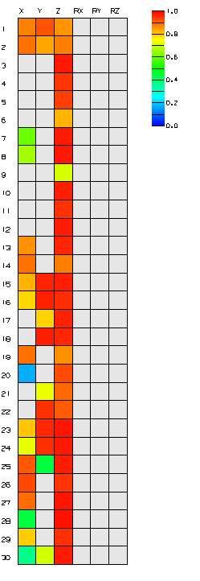

Plot the CoMAC matrix
 Simulation Navigator
Simulation Navigator
-
 Correlation Metrics
Correlation Metrics -
 Correlate
Correlate -
Method
COMAC

-
Show Results Heat Map
-
Close
Close all dialog boxes.

|
Note |
The CoMAC values that approach 1.0 indicate that these particular degrees-of-freedom have good correlation across the set of mode pairs. The column indicates the sensor’s degree-of-freedom and the row indicate the sensor’s number. You can display the sensor’s number in the graphics window using the Show Sensors command. Notice that most of the cells with green and bluish colors are in the X column indicating that these particular sensors have poorer correlation between the set of mode pairs in the X degree-of-freedom. |